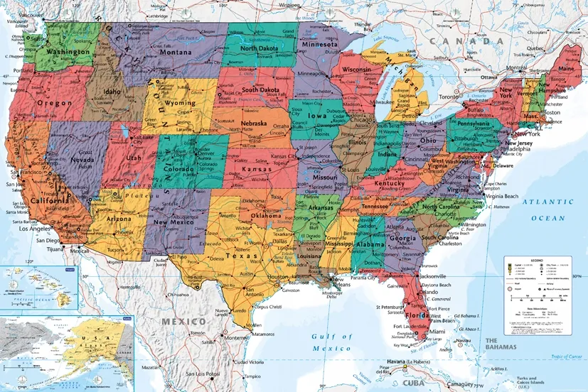
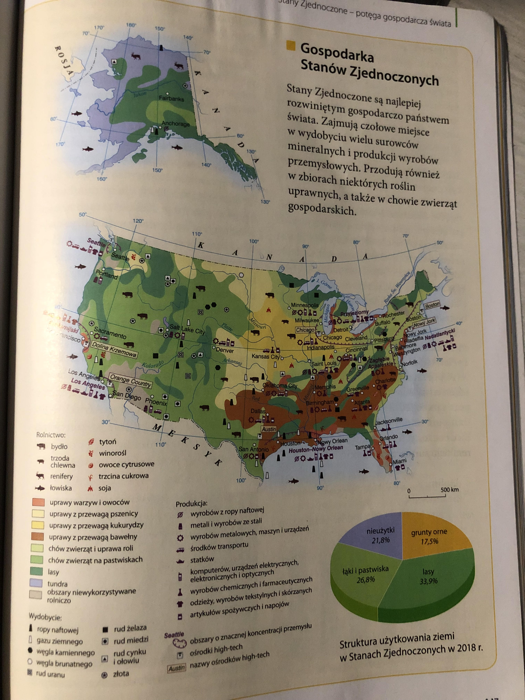
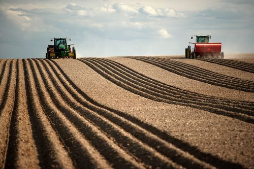
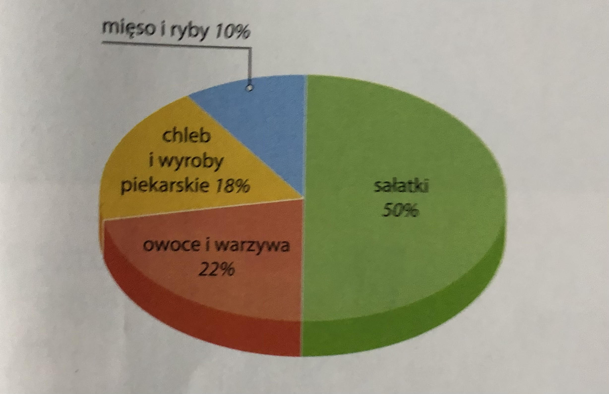

Powierzchnia: 9,5mln km².
Ludność i Gęstość zaludnienia: 323,2mln, 34,5 os./km² (2019).
PKB: ok. 65 tysięcy na osobę (2019).
Stolica: Waszyngton.
Język urzędowy: angielski.
Waluta: dolar amerykański (USD)
Stany Zjednoczone Ameryki (USA) znajdują się na środkowej częsci Ameryki Północnej.
Mają południkowy układ rzeźby terenu.
Stany zajmują trzecie miejsce pod względem liczby mieszkańców.
Nierównomierne rozmieszczenie ludności.
Przemysł rozwinął się w XIX wieku.
Przemysł obecnie jest bardzo nowoczesny.
Czołowe miejsce w wydobyciu m. in. węgla kamiennego i brunatnego.
Przemysł zaawansowanych technologii.
Pierwszy na świecie ośrodek high-tech: Dolina Krzemowa.
W Dolinie Krzemowej swe siedziby mają znane firmy: Apple, eBay, Facebook, Google, Intel.
Najważniejszą rolę odgrywają: Usługi telekomunikacyjne, edukacyjne, naukowo-badawcze i finansowe.
Istotny wpływ na rozwój gospodarki na także transport.
Sprzyjające gleby i klimat.
Średnia wielkość farm wynosi 180ha
Zróżnicowanie przestrzenne produkcji rolnej
Duża produkcja żywności
Przez łatwy dostęp do żywności oraz jej niskie ceny dużym problemem jest marnowanie żywności.
Każdego roku marnuje się około 60mln t żywności wanrtej około 160mld USD.
